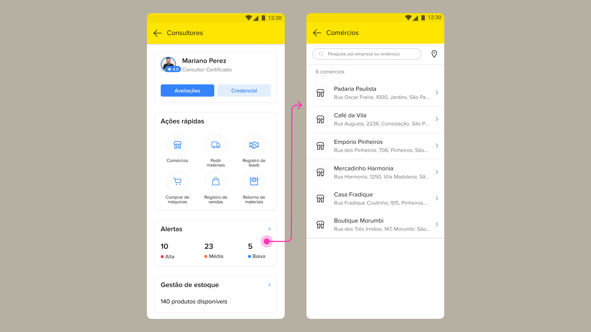

Antes
Alertas soltos, planejamento feito de memória, oportunidades passando em branco
O representante recebia alertas de prioridade, mas a ferramenta não ajudava a transformar isso em um plano de visitas viável. Redesenhar esse fluxo para Brasil, México e Argentina sem fragmentar o comportamento do produto entre mercados.
Atuei na vertical de adquirência do Mercado Pago, liderando o design de experiência de um CRM interno focado em impulsionar o relacionamento e a receita de contas PJ.
O produto é a principal ferramenta de trabalho de equipes comerciais de campo, desenhado para otimizar desde a prospecção fria até a gestão e desenvolvimento de carteiras de PMEs altamente pulverizadas.
O representante comercial enfrenta uma rotina que vai muito além de visitar lojistas. Ele precisa prospectar novas contas e bater metas de venda ao mesmo tempo em que resolve problemas logísticos complexos. Esse profissional transporta e gerencia o próprio estoque de maquininhas, distribui materiais de sinalização nos pontos de venda e recolhe os terminais que apresentam defeito. Como o seu tempo se divide entre a pressão comercial e o suporte técnico no balcão do cliente, cada minuto na rua precisa ser estratégico.

O aplicativo mostrava que existiam oportunidades comerciais com prioridade alta, média e baixa, mas não vinculava esses alertas aos estabelecimentos na tela principal. Sem essa associação direta, o representante precisava abrir o perfil de cada cliente, um por um, para descobrir onde estava a pendência e o que a operação precisava que fosse atendido. Essa falta de conexão gerava um vai e vem repetitivo de telas que atrasava a montagem da rota de rua.

Desenhei fluxos lógicos e wireframes para entender como trazer os motivos das visitas, que ficavam escondidos, para a tela principal. Levei esses esboços para a engenharia e mapeamos o que já dava para aproveitar do sistema atual, o que garantiu a entrega do componente no prazo sem precisar refazer a base de dados do aplicativo.
Como a mesma tela precisava rodar no Brasil, México e Argentina, conversei com os times de fora para entender o que mudava na rotina deles. Nessas horas, ter aprendido espanhol com meu antigo time me ajudou muito a destravar os alinhamentos. Essa conversa garantiu que a nova agenda funcionasse para todo mundo no mesmo aplicativo, respeitando as regras locais de cada região sem precisar criar um código diferente para cada país.
O princípio que orientou a concepção da nova experiência foi o de transparência informativa. Em vez de distribuir as informações necessárias à decisão ao longo de múltiplas telas, o fluxo foi desenhado para que cada etapa entregasse contexto suficiente para a ação seguinte, sem exigir do representante nenhuma busca adicional.
Ao reunir prioridades, contexto e planejamento em um único fluxo, a nova solução permitia que os representantes deixassem de reagir aos alertas do dia para planejar a evolução da carteira com mais antecedência e controle.
Antes de envolver engenharia, conduzi cinco sessões remotas com representantes comerciais com perfis variados: diferentes idades, senioridades e familiaridades com tecnologia. O objetivo não era saber se a interface era boa, mas se a lógica de priorização fazia sentido no contexto real de trabalho deles.
O recrutamento foi intencional: representantes do Brasil e da Argentina juntos, porque a solução precisava funcionar com o mesmo comportamento em mercados com processos locais diferentes.
A hipótese de design era que o custo cognitivo da navegação hierárquica estava fragmentando a capacidade de análise do representante. Toda vez que o contexto de uma prioridade exigia uma etapa adicional de navegação, o representante interrompia a visão geral da carteira para acessar um único registro, perdendo o fio do raciocínio que sustentava o planejamento do dia.
Nas sessões ficou claro que a agenda funcionava como ferramenta de planejamento, mas os representantes precisavam abrir o detalhe de cada visita para entender por que aquela visita era prioritária. Isso fragmentava a análise da carteira.
A decisão foi exibir os motivos de priorização diretamente na listagem, como tags visíveis antes de entrar no detalhe de cada visita. Um ajuste que mudou o momento em que o consultor conseguia avaliar e reorganizar o dia.
A carteira deixou de ser analisada de forma reativa e fragmentada. Com prioridades, contexto e planejamento reunidos num único fluxo, os representantes passaram a estruturar o dia com antecedência em vez de reagir aos alertas do momento.
Alertas soltos, planejamento feito de memória, oportunidades passando em branco
Visitas planejadas com contexto, prioridades visíveis antes da decisão, carteira gerenciada com antecedência
Os indicadores de conversão melhoraram de forma incremental, não exponencial. Seria desonesto atribuir à interface uma capacidade de transformação que dependia de variáveis fora do alcance do design.
A limitação de escala não era a interface. Era a integridade do dado de CRM. Quando os registros de prioridade chegavam incompletos ou desatualizados, a lógica de ordenação da tela perdia o fundamento, e o representante voltava à intuição como critério principal de decisão.
Ao unificar a lógica de priorização entre Brasil, México e Argentina em um único fluxo de produto, o projeto estabeleceu uma base comum de comportamento que antes não existia. Cada mercado deixou de operar com adaptações locais independentes e passou a compartilhar a mesma estrutura de decisão, reduzindo o custo de manutenção do produto e criando as condições para que evoluções futuras beneficiassem os três mercados ao mesmo tempo.